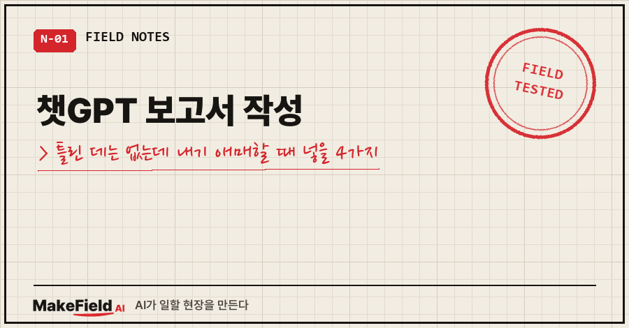
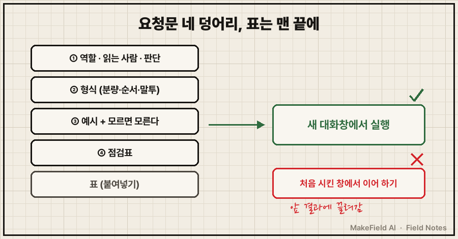
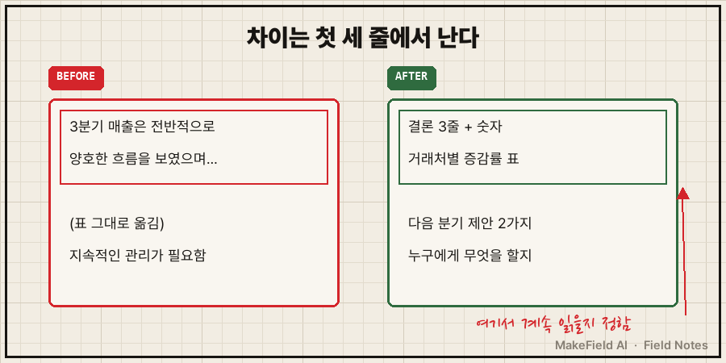
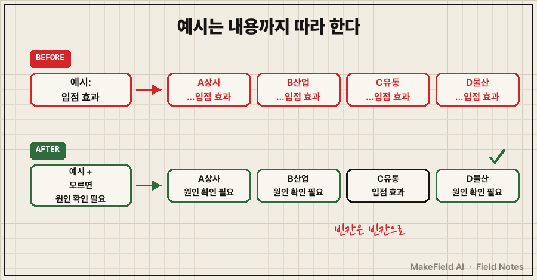

챗GPT 보고서 작성을 맡겨 봤는데, 읽어 보면 틀린 데는 없고 그렇다고 팀장님께 올리기엔 애매하죠.
결론부터요. 챗GPT로 보고서를 쓸 때 요청문에 ①역할과 읽는 사람 ②형식 ③예시 ④점검표, 이 네 가지를 넣고 새 대화창에서 실행하면 첫 세 줄이 인사말에서 결론과 숫자로 바뀝니다. 설치도 결제도 필요 없고, 무료 버전에서도 됩니다.
현장에서 15년 장비를 만져 온 엔지니어고, 요즘은 문서 초안 상당수를 AI랑 같이 써요.
지난 편에서 "다음엔 설치 없이 지금 쓰는 대화창 그대로 결과를 바꿔 보자"고 했죠. 오늘이 그 편(책 0-2장)입니다. 2026년 10월 기준 ChatGPT·Claude·Gemini 어느 대화창이든 같은 방식으로 돼요.
1. 왜 '틀린 데는 없는데 애매한' 보고서가 나올까요
AI가 모자라서가 아니라 누가 읽고 무엇을 정할 보고서인지 모르니까 가장 평균적인 답을 내놓는 거예요.
보통 이렇게 시키죠.
지난달 매출 정리해서 보고서 써줘
(표 붙여넣기)그러면 "전반적으로 양호한 흐름을 보였으며…"로 시작하는 글이 나와요. 틀린 말은 없어요. 그런데 이 글로 뭘 결정하라는 건지가 안 보이죠.
사람도 마찬가지예요. 신입한테 "보고서 좀 써 와"만 던지면 비슷한 게 와요. 일 잘하는 선배는 다르게 말하죠. 누가 볼 건지, 몇 장으로, 어떤 순서로, 뭘 확인하고 낼지까지요. 그 네 가지를 요청문에 옮기는 게 오늘 할 일입니다.
2. 따라 해 보기: 요청문 네 덩어리 만들기
대화창 하나만 열어 두세요. 실제 업무 표가 있으면 그걸 쓰시고, 없으면 아래 예시 표를 복사해 쓰시면 됩니다.
거래처별 3분기 매출(단위: 만 원)
거래처 7월 8월 9월 전년 3분기 합계
A상사 1,200 1,150 1,420 3,300
B산업 800 760 690 2,500
C유통 450 520 610 1,200
D물산 300 310 290 900① 먼저 평소처럼 한 번 시킵니다. "이 표로 3분기 매출 보고서 써줘"라고만 하고, 결과를 메모장에 복사해 두세요. 이게 비교용 '개선 전'이에요.
② 역할과 읽는 사람을 줍니다. 진짜 중요한 건 두 번째 줄이에요. 읽는 사람이 무엇을 정해야 하는지 알면 AI가 그 판단에 필요한 내용부터 앞에 놓거든요.
너는 중소기업 영업관리팀 과장이야.
이 보고서는 팀장님이 5분 안에 읽고 "다음 분기 어느 거래처에 집중할지" 판단하는 데 쓰여.③ 형식을 줍니다. 안 정해 주면 서론·본론·결론 에세이가 나와요.
형식:
- A4 한 장 분량
- 맨 위에 결론 3줄 (숫자 포함)
- 그다음 거래처별 표 (전년 대비 증감률 열 추가)
- 마지막에 "다음 분기 제안" 2가지
- 문장은 "~함", "~임"으로 끝나는 개조식말투 줄은 각자 회사 문서에 맞게 바꾸세요.
④ 예시 한 줄을 줍니다. "간결하게 써"보다 "이렇게 써"가 훨씬 잘 먹혀요. 단, 마지막 줄은 빼면 안 돼요. 이유는 4절에서요.
참고할 문장 예시:
"C유통 3분기 매출 1,580만 원, 전년 대비 +32%. 신규 매장 2곳 입점 효과로 판단됨."
위처럼 숫자 → 증감 → 이유 순서로 한 문장에 담을 것.
단, 이유는 표에서 알 수 없으면 "원인 확인 필요"라고 쓸 것.⑤ 점검표를 붙입니다. AI는 시키지 않으면 확인을 안 하고, 시키면 꽤 성실하게 해요.
다 쓴 뒤에 아래를 스스로 확인하고, 결과를 맨 아래에 따로 적어줘:
1. 표의 합계가 원래 표의 숫자와 일치하는가
2. 증감률 계산이 맞는가 (계산식도 보여줄 것)
3. 표에 없는 숫자를 지어내지 않았는가⑥ 네 덩어리를 이어 붙이고, 표는 맨 끝에. 그리고 새 대화창에서 실행합니다. ①을 했던 창에서 이어 하면 앞의 평범한 결과에 끌려가요.

그림을 말로 옮기면, 역할·형식·예시·점검표 순서로 쌓고 표를 맨 아래 붙인 다음, 처음 시켰던 창이 아니라 새 창에 넣는다는 뜻이에요.
3. 결과는 첫 세 줄에서 갈립니다
두 결과를 나란히 놓고 이 세 곳만 보세요. 제가 여러 번 해 보며 본 경향이고, 여러분 결과는 다를 수 있어요.
| 볼 곳 | 개선 전에 흔한 모습 | 개선 후 기대하는 모습 |
|---|---|---|
| 첫 세 줄 | "3분기 매출은 전반적으로…" 인사말 | 결론과 숫자 |
| 표 | 원래 표를 거의 그대로 옮김 | 증감률 열이 붙어 비교가 됨 |
| 끝부분 | "지속적인 관리가 필요함" 같은 일반론 | 누구에게 무엇을 할지 구체적 제안 |

제일 크게 달라지는 건 첫 세 줄이에요. 읽는 사람은 거기서 더 읽을지를 정하거든요.
그리고 마지막 단계가 하나 더 있어요. 잘 나온 요청문을 요청문_분기매출보고.txt로 저장하는 것. 다음 분기엔 표만 바꿔서 그대로 쓰면 돼요.
제일 중요한데 제일 안 하는 단계예요. 저도 이걸 3년 동안 안 했거든요. 공들여 다듬은 요청문이 매번 대화창이랑 같이 사라졌어요. 다음 분기에 또 처음부터 쓰고, 또 다듬고, 또 날리고..
여러분은 잘 먹힌 요청문, 어디에 모아 두고 계세요?
CLI 에이전트를 쓰면 이 파일이 바로 일감이 됩니다. Claude Code를 그 폴더에서 켜고 이렇게 시키면 돼요.
보고서작업/
├─ 요청문_분기매출보고.txt
└─ 3분기매출.csv
> 요청문_분기매출보고.txt 그대로 따라서, 3분기매출.csv로 보고서 써줘복붙이 없어지는 거죠. GPT 쪽 Codex CLI, Gemini CLI에서도 같은 방식으로 됩니다. 폴더 안 파일을 읽는 구조는 셋이 같아요. 이 txt 파일이 나중엔 AI가 매번 알아서 읽는 '지침 파일'로 자라요(책 2부 내용이에요).
4. 여기서 이렇게 틀립니다: 예시를 주면 내용까지 따라 해요
증상: 예시로 "신규 매장 입점 효과"를 줬더니, 모든 거래처의 증감 이유가 비슷한 이야기로 채워졌어요.
원인: AI는 예시의 형식만 배우는 게 아니라 내용까지 흉내 내요. 표에는 이유가 한 글자도 없는데, 모르는 칸을 예시랑 비슷한 그럴듯한 말로 메우는 거죠.
이렇게 합니다: 예시 바로 밑에 "모르면 모른다고 쓸 것" 한 줄을 붙이세요. ④번 요청문의 "원인 확인 필요" 줄이 그 역할이에요.

그림 내용을 글로 쓰면, 위쪽은 예시 하나가 네 거래처 이유를 전부 같은 이야기로 채운 경우고, 아래쪽은 금지 한 줄을 붙여서 모르는 칸이 '원인 확인 필요'로 남은 경우예요.
빈칸을 빈칸이라고 적은 보고서가, 그럴듯하게 틀린 보고서보다 훨씬 안전합니다. 팀장님이 "B산업 왜 빠졌어?" 하고 물어봐 주는 쪽이, 지어낸 이유로 결정해 버리는 쪽보다 낫잖아요.
자주 묻는 질문
Q. 무료 버전에서도 챗GPT 보고서 작성이 이렇게 되나요?
돼요. 네 덩어리는 전부 대화창에 붙여 넣는 글자일 뿐이라 요금제와 상관없어요.
Q. 역할 한 줄만 넣으면 안 되나요?
"너는 과장이야"만으로는 크게 안 바뀌어요. 차이를 만드는 건 그 밑의 "누가 읽고 무엇을 판단하는지" 줄이에요. 시간이 없으면 그 두 줄과 형식만 먼저 넣어 보세요.
Q. 우리 회사 보고서는 개조식이 아닌데요?
③ 형식의 마지막 줄만 바꾸면 돼요. 예전에 잘 쓴 보고서 문장 두세 줄을 ④ 예시 자리에 넣으면 말투까지 따라와요.
요청문만으로 갈 수 있는 건 딱 여기까지예요. 다음 편에선 같은 모델을 쓰는데도 사람마다 결과가 갈리는 이유를 해 볼게요.
이 글은 『직장인의 AI 오답 노트』 0-2장을 블로그용으로 다시 쓴 것입니다. 같은 증상의 원인과 점검표 전체는 책에 있어요. https://bookk.co.kr/bookStore/6ac4db0965e94aef5d1b317d